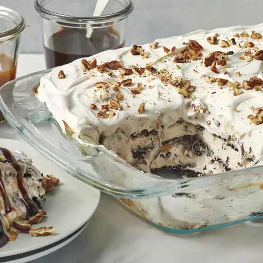

Ice Cream Sandwich Cake

Your Go-To Ice Cream. And it's a Cake! And Sandwich!
You might be wondering: Bleach likes sandwiches. Yeah, well, I wonder too. But let's focus less on the sandwich part. It's the cake, the dessert, that matters. So I made this cake, and boy did it taste good to the point there weren't any leftovers and a little girl renamed it "The Best Dessert I've Ever Eaten!"
Let's go on and see what magic this recipe has to offer!
Ingredients
- 24 vanilla ice cream sandwiches, unwrapped
- 2 (8 ounce) containers whipped topping (such as Cool Whip®), thawed
- 1 (12 ounce) jar hot fudge ice cream topping, warmed
- 1 (12 ounce) jar caramel ice cream topping
- ¼ cup chopped pecans, or to taste
Steps
- Arrange a layer of ice cream sandwiches in the bottom of a 9x13-inch dish; top with a layer of whipped topping, hot fudge topping, and caramel topping. Repeat layering with remaining ice cream sandwiches, whipped topping, hot fudge topping, and caramel topping, ending with a top layer of whipped topping. Sprinkle with pecans. Or crushed Butterfinger candy bar.
- Cover the dish with aluminum foil and freeze until set, about 30 minutes.
I know I wouldn't skip this one!